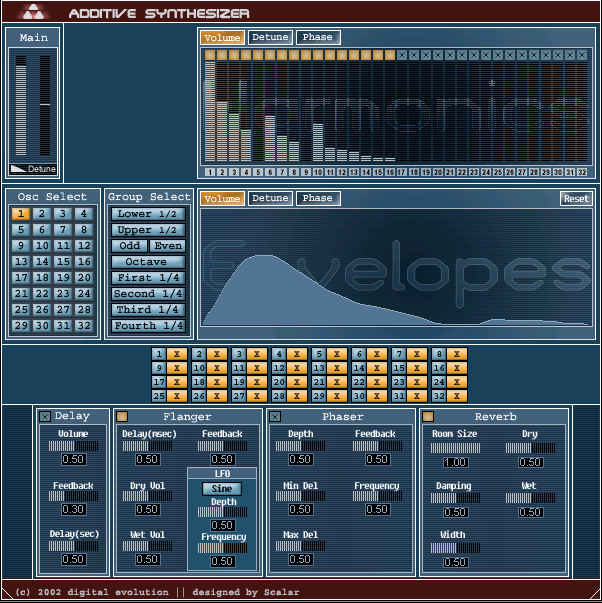

Additive Synthesizer:
Additive synthesis is based on Fourier's theory that every periodic sound is composed out of many sine waves added together. The product is going to achieve this with 32 sine wave oscillators. The first oscillator is pitched to the base frequency; all the others have a multiple of the base frequency, eg. the second oscillator has twice the base frequency. Each oscillator's parameters (frequency, phase and volume) can be controlled by an envelope. Furthermore, there are envelopes that control groups of parameters for faster work. Special emphasis is going to be given to the user interface, which has to represent the data of the 32 oscillators. Most implementations of additive synthesizers were lacking a good user interface to make them easily controllable, and/or the necessary processing power that we now have. To extend the flexibility four effects (flanger, phaser, reverb and delay) will be added and can be applied to any group of oscillators. This will give the user a good control over every frequency of the sound. The synthesizer can be run from any sequencer that supports VST plugins. It can be loaded into the sequencer and is then controlled by Midi messages which are sent from the sequencer.
